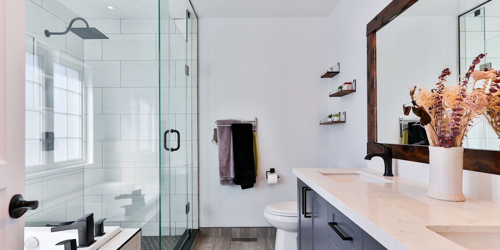
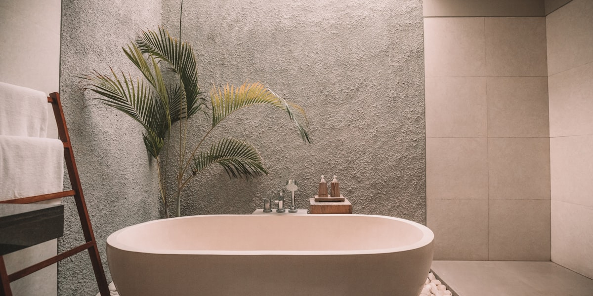

Представьте себе ванную комнату, где вы можете управлять душем голосом, зеркало само подсвечивается и показывает погоду, а смартфон предупреждает о протечках. Звучит как фантастика? Это реальность 2026 года. Давайте посмотрим, что готовят инновационные технологии и новые тренды.
🔋 Умные решения сберегают ресурсы
Современные технологии делают ванные комнаты не только удобнее, но и экономичнее. Вот ключевые инновации, которые уже доступны:
💧 Бесконтактные смесители с аэраторами
Они сокращают расход воды на 30–50% без потери качества мытья. Вода включается автоматически при поднесении рук и выключается через заданное время.
🪞 Умные зеркала
Зеркала с антизапотеванием и подсветкой не только красивы, но и ускоряют утренние сборы. Они могут отображать время, погоду, новости и даже выполнять функции смарт-дисплея.
📱 Детекторы протечек воды
Умные датчики мониторят влажность 24/7 и мгновенно оповещают на смартфон о возможной протечке, предотвращая серьезный ущерб.

🎯 Тренды 2026 года: умные технологии и новая эстетика
В будущем ванные комнаты будут еще более автоматизированы. Вот что уже становится реальностью:
Умные технологии
- Бесконтактные смесители и унитазы — полностью автоматизированная сантехника
- Унитазы с подогревом и самоочисткой — комфорт и гигиена на новом уровне
- Голосовое управление душем — "Алиса, включи душ на 38 градусов"
- Датчики влажности — автоматическая вентиляция для предотвращения плесени
Минимализм и эстетика
- Крупноформатный керамогранит — минимум швов, максимум визуальной чистоты
- Скрытое хранение — встроенные шкафы и ниши
- Максимум свободного пространства — уход от захламленности к минимализму

🎨 Выбор материалов и форм: куда движется дизайн
Тренды в материалах и формах меняют представление о ванных комнатах:
- Матовая сантехника (никель, графит) вместо глянцевой
- Цветное и рельефное стекло для душевых перегородок
- Ванны как арт-объекты — скульптурные формы на подиумах
- Натуральные текстуры — камень, дерево, бетон
💡 Wellness и спа-атмосфера
Ванная превращается из утилитарного помещения в зону wellness:
- Связь с природой — растения, натуральные материалы
- Многоуровневое освещение — создание нужного настроения
- Акцентные потолки — необычные решения в отделке
- Ароматерапия и аудиосистемы — полное погружение в релакс
🛠️ Как сделать ванну комфортнее: советы от профессионалов
Совет 1: Интеграция "умного дома"
На этапе планировки учтите интеграцию умных систем. Начните с датчиков влажности и бесконтактных смесителей — это поможет не только создать удобство, но и экономить воду.
Совет 2: Крупный формат плитки
Если вы хотите создать эстетический и минималистичный интерьер, обратите внимание на крупный формат плитки. Минимум швов делают пространство гармоничным и простым в уходе.
🔮 Что нас ждет дальше?
Ванные комнаты будущего — это сочетание технологий, новой эстетики и удобства. И уже сегодня вы можете начать воплощать эти тренды в жизнь:
- Установите бесконтактные смесители для экономии воды
- Добавьте умное зеркало с подсветкой
- Используйте крупноформатную плитку для визуальной чистоты
- Интегрируйте датчики влажности для предотвращения плесени
- Выберите матовую сантехнику для современного вида
Будущее уже здесь. Не нужно ждать — начните трансформацию своей ванной комнаты прямо сейчас!